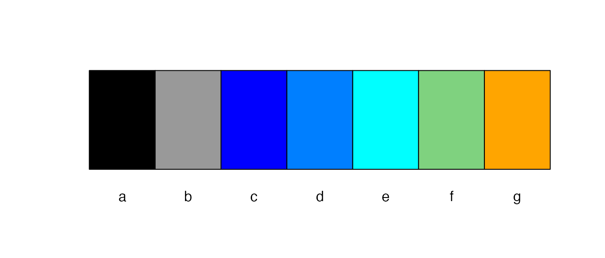

Background
The section of colors are flexible and convenient using functions
like grDevices::colorRamp(), or
grDevices::rainbow(). There are situations that we need to
reserve some colors for some specific groups, and control the mapping of
color and group values. color_set_palette() generate a list
of color by taking group values and allows two reserved colors.
color_test_palette() shows selected palette on two
different formats (bar or line) to visually inspect the color
selection.
How to use
This is a basic example which shows you how to automatically select colors for each of the categories, a to g, by setting 3 major colors. The second argument specify the order of ‘a’ to ‘g’. The third and fourth arguments specify that ‘a’ is assigned to the black color, and ‘b’ is assigned to the gray color.
library(mtb)
colvect = color_set_palette(c('a','b','d','c','e','f','g'), c(1,2,4,3,5,6,7),black='a',gray9='b',cols=c('blue', 'cyan','orange'))This is a basic example which shows you how to quickly test selected colors:
color_test_palette(colvect, type='bar')
color_test_palette(colvect, type='line')Below is an example that uses grDevices::rainbow()
function to generate a color vector to be used as major colors. Note
that if the order of group is set as NULL, the order will be given by
the alphabetical order of group values.
group=paste('g', sample(1:12,120, replace=T), sep="")
colvect = color_set_palette(group, NULL, black='g1',gray9='g2',cols=rainbow(5))
#> Warning in color_set_palette(group, NULL, black = "g1", gray9 = "g2", cols =
#> rainbow(5)): invalid vectnThis is a basic example which shows you how to quickly test selected colors:
color_test_palette(colvect, type='bar')
color_test_palette(colvect, type='line')